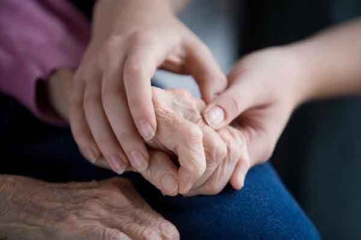
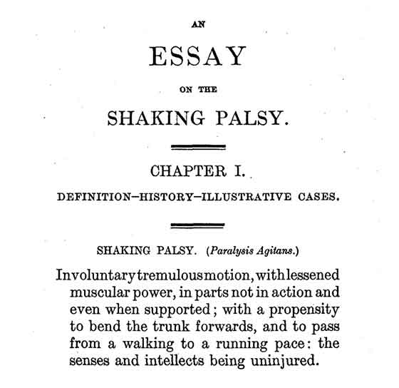
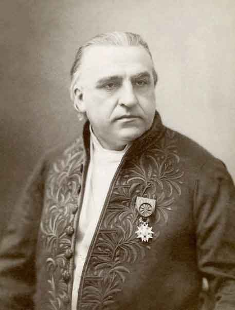
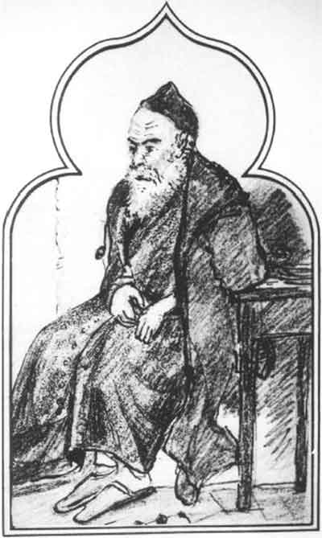
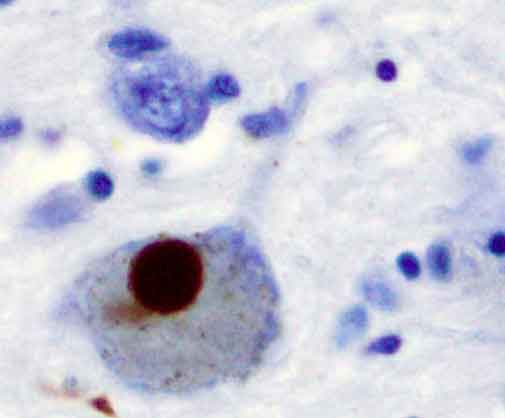
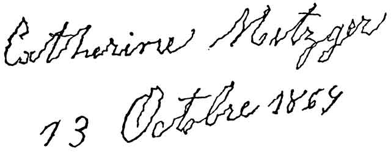
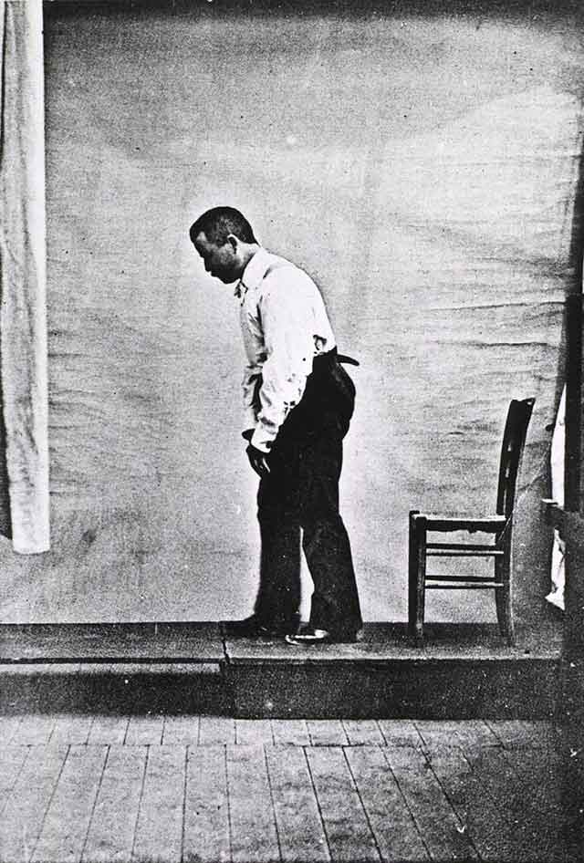
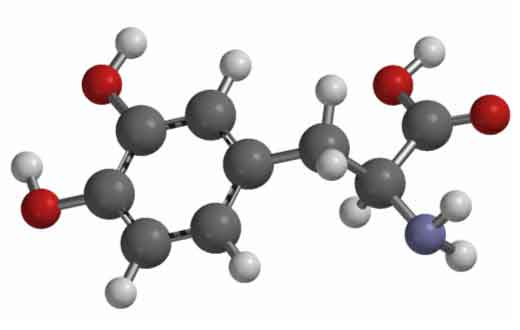

Хвороба Паркінсона, або тремтливий параліч — повільно прогресуюче хронічне неврологічне захворювання, притаманне особам літнього віку. Відноситься до дегенеративних захворювань екстрапірамідної моторної системи. Хворобу спричинює прогресуюче руйнування ізагибель нейронів, що виробляють нейромедіатор дофамін, — насамперед у чорній субстанції, а також і в інших відділах центральної нервової системи. Недостатнє вироблення дофаміну веде до активного впливу базальних гангліїв на кору головного мозку.  Основними ознаками є: 1)м'язова ригідність; 2)гіпокінезія; 3)тремор; 4)постуральна нестійкість. Сучасна медицина поки не може вилікувати захворювання або сповільнити його прогресування (етіологічна або патогенетична терапія),однак існуючі методи консервативного і оперативного лікування дозволяють значно покращити якість життя хворих. Термін «паркінсонізм» є загальним поняттям для ряду захворювань і станів з вищезазначеними провідними симптомами. Однак найзначнішою з форм паркінсонізму є хвороба Паркінсона — ідіопатичне захворювання (що означає хворобу самостійну, або ту, яку не спричинюють генетичні порушення чи інші захворювання). Своєю назвою хвороба Паркінсона зобов'язана французькому неврологу Жану Шарко. Він запропонував назвати її на честь британського лікаря і автора «Есе про тремтячий параліч» Джеймса Паркінсона, чия праця не була належним чином оцінена за життя.
Історія вивчення
Прояви хвороби Паркінсона були описані за кілька тисячоліть до опублікування в 1817 році Джеймсом Паркінсоном «Есе про тремтячий параліч» (англ. An Essay on the Shaking Palsy). В єгипетському папірусі XII сторіччя до н. е. у одного з фараонів відзначені характерні для захворювання симптоми. В Біблії описані люди з тремором. В текстах Аюрведи захворювання, що проявляється тремором, обмеженням рухів, слинотечею та іншими характерними симптомами, рекомендовано лікувати деякими видами бобових. Знаменитий давньоримський лікар Гален, імовірно, ще в II столітті описав хворобу Паркінсона, вказавши на її ознаки — тремор спокою (тремтіння частин тіла в стані спокою), постуральну нестійкість і м'язову ригідність. Після Галена симптоми паркінсонізму знову були описані лише у XVII столітті. Голландський лікар і анатом Франциск Сильвий зазначив відміну тремору спокою від інших видів тремтіння, німецький лікар Ієронім Гобій виділив риси характерної для паркінсонізму ходи. Знаменитий шотландський хірург Джон Хантер дав докладний опис хворого на паркінсонізм. У 1817 році англійський лікар Джеймс Паркінсон опублікував «Есе про тремтячий параліч».  Перша сторінка «Есе про тремтячий параліч» Джеймса Паркінсона У ньому він описав шістьох хворих людей, детально зупинившись на таких характерних ознаках захворювання, як тремор спокою, патологічна хода,постуральна нестійкість, м'язова ригідність тощо. Також він оцінив їх динаміку в подальшому перебігу хвороби. Робота залишалася непоміченою протягом 40 років після опублікування. Класичні дослідження неврологів У. Говерса, С. Вільсона, В. Ерба і Ж. Шарко в 1868—1881 роках дозволили виділити хворобу Паркінсона як самостійне захворювання.  Жан Шарко — французький невролог, який запропонував називати захворювання хворобою Паркінсона  Малюнок людини з хворобою Паркінсона, зроблений Жаном Шарко За пропозицією знаменитого французького невролога Шаркозахворювання отримало ім'я британського лікаря Паркінсона, чия праця не була належним чином оцінена за життя.Після визначення хвороби Паркінсона як самостійного захворювання виникло питання про те, ураження яких структур призводить до його симптомів. Французький невролог Едуард Бріссо наприкінці XIX сторіччя припустив, що за розвиток захворювання відповідальні субталамічне ядро і ніжки мозку (відділ середнього мозку). У 1912 році Фредерік Леві виявив специфічні клітинні включення в клітинах стовбура мозку, характерні для хвороби Паркінсона, згодом названі тільцями Леві. У 1919 році російський невролог К. Н. Третьяков визначив, що основні патологічні зміни при захворюванні виникають в чорній субстанції. Припущення К. Н. Третьякова не визнавало медичне товариство до його підтвердження німецьким патологоанатомом Рольфом Хасслером в 1948 році. Біохімічні зміни, які лежать в основі захворювання, стали вивчати в 1950-х роках. За дослідження нейротрансмітера дофаміну, що грає важливу роль в розвитку захворювання, шведський фармаколог Арвід Карлссон отримав Нобелівську премію з фізіології і медицини в 2000 році. Разом з дослідженнями природи захворювання розвивали методи його лікування. Неврологи кінця XIX — початку XX століть відзначали позитивний ефект алкалоїдів групи атропіну беладони. У 1939 році була зроблена спроба хірургічного лікування — деструкція базальних гангліїв. Ці методики були вдосконалені за наступні 20 років. До впровадження в клінічну практику леводопи антихолінергічні препарати і хірургічне руйнування базальних ядер залишалися основними методами лікування хвороби Паркінсона. Наприкінці 1980-х років стимуляція глибинних структур мозку електричними імпульсами була визнана можливим методом лікування захворювання.
Епідеміологія
Хвороба Паркінсона становить 70-80 % випадків синдрому паркінсонізму. Вона є найбільш частим нейродегенеративним захворюванням після хвороби Альцгеймера. Захворювання зустрічається повсюди. Його частота коливається від 60 до 140 осіб на 100 тисяч населення, число хворих значно збільшується серед представників старшої вікової групи. Питома вага людей з хворобою Паркінсона у віковій групі старше 60 років становить 1 %, а старше 85 років — від 2,6 % до 4 %. Найчастіше перші симптоми захворювання з'являються в 55-60 років. Проте у ряді випадків хвороба може розвинутися і у віці до 40 (хвороба Паркінсона з раннім початком) або до 20 років (ювенільна форма захворювання). Чоловіки хворіють дещо частіше, ніж жінки. Суттєвих расових відмінностей в структурі захворюваності не виявлено.
Етіологія
Сучасною медициною досягнуто певного прогресу в розумінні молекулярних і біохімічних механізмів хвороби Паркінсона. Не дивлячись на це, залишається невідомою істинна етіологія спорадичних форм цього захворювання. Велике значення мають генетична схильність і фактори зовнішнього середовища. Поєднання і взаємодія цих двох факторів ініціюють процес дегенерації в нейронах стовбура головного мозку. Такий процес, одного разу виникнувши, стає незворотнім і починає експансивне поширення по всьому мозку. На клітинному рівні механізм цього процесу виглядає як недостатність дихальних функцій мітохондрій, а також окисний стрес — основна причина апоптозу нейронів. Однак у патогенезі хвороби Паркінсона беруть участь й інші чинники, функції яких залишаються не розкритим досі.
Екологічні чинники
Встановлено, що після ін'єкції речовини 1-метил-4-феніл-1,2,3,6-тетрагідропірідін (МФТП) розвивається паркінсонізм. МФТП проникає через гематоенцефалічний бар'єр і під дією МАО-B окислюється до 1-метил-4-фенілпірідіна (МФП +). МФП + проникає в мітохондрії та інгібує комплекс I дихального ланцюга. Подібність хімічної будови МФТП і деяких пестицидів (наприклад, ротенон, паракват) і гербіцидів (наприклад, Агент Оранж) дозволило припустити, що МФТП-подібні токсини навколишнього середовища сприяють розвитку хвороби Паркінсона. До факторів ризику відносять також проживання в сільській місцевості і близькість промислових підприємств і кар'єрів. Ризик розвитку хвороби Паркінсона у курців в 3 рази нижче, ніж у некурців. Припускають, що це пов'язано з дофамін-стимулюючим ефектом нікотину. Крім того, це можна пояснити наявністю в димі тютюну сполук, дія яких подібна інгібіторам МАО. Від розвитку хвороби Паркінсона захищає також вживання кофеїну.
Окислювальна гіпотеза
Окислювальна гіпотеза припускає, що вільні радикали, які утворюються при окислювальному метаболізмі дофаміну, грають важливу роль у розвитку та прогресуванні хвороби Паркінсона. Вміст речовин, які можуть служити донором електронів, в чорній речовині збільшується, що сприяє утворенню вільних радикалів. Крім того, при окисленні дофаміну під дією МАО утворюється пероксид водню. Якщо пероксид водню не зв'язується з глутатіоном, то відбувається накопичення вельми реактивних гідроксильних радикалів, які вступають в реакцію з ліпідами клітинних мембран, викликаючи перекисне окислення ліпідів і загибель клітин.
Патогенез
Патологічна анатомія
При хворобі Паркінсона уражені структури екстрапірамідної системи — базальні ядра і чорна речовина, блакитна пляма тощо. Найбільш виражені зміни відзначають у передніх відділах чорної субстанції. Типові для хвороби Паркінсона симптоми виникають при загибелі 60-80 % нейронів цього анатомічного утворення. Макроскопічні зміни характеризуються депігментацією блакитної плями і області чорної речовини, яка містить меланін. При мікроскопічному дослідженні уражених областей виявляють зменшення числа нервових клітин. У них визначають наявність тілець Леві. Також відбувається загибель астроцитів (різновиди гліальних клітин) і активація мікроглії. Тільця Леві утворюються внаслідок накопичення і агрегації в цитоплазмі клітин білка α-синуклеїну.  Тільце Леві (коричнева пляма) в нейроні чорної речовини[en] при хворобі Паркінсона. Коричневий колір надає забарвлений білок α-синуклеїн. Вважають, що α-синуклеїн відіграє ключову роль в етіології та патогенезі хвороби Паркінсона та інших синуклеопатій, хоча фізіологічні й патологічні функції цього протеїну ще остаточно не з'ясовані. Наявність тілець Леві — одна з ознак хвороби Паркінсона. Водночас, тільця Леві виявляють також і при інших нейродегенеративних захворюваннях. У зв'язку з цим їх не вважають специфічним маркером хвороби Паркінсона. Крім того, при даному захворюванні в чорній субстанції і блакитній плямі виявлені «бліді тільця» — внутрішньоклітинні гранулярні включення, які заміщають меланін, що розпадається. Згідно запропонованої Брааком і співавторами класифікації, в асимптоматичній стадії хвороби Паркінсона тільця Леві з'являються в нервових клітинах нюхової цибулини, довгастого мозку і варолієвого моста. З прогресуванням захворювання наявність даних патологічних тілець зазначають в нейронах чорної субстанції, середнього мозку, базальних гангліїв і, на кінцевих етапах, в клітинах кори головного мозку.
Патологічна фізіологія
Тісний взаємозв'язок між складовими екстрапірамідної системи — палідум і стріатумі — забезпечують численні пучки нервових волокон. Завдяки зв'язкам між таламусом і стріопалідарною системою утворюються рефлекторні дуги, що забезпечують виконання численних стереотипних і автоматизованих рухів (наприклад, хода, біг, плавання, їзда на велосипеді тощо). Тісний зв'язок стріопалідарної системи з ядрами гіпоталамуса визначає її роль в механізмах емоційних реакцій. В нормі екстрапірамідна система посилає імпульси до периферичних рухових нейронів. Ці сигнали відіграють важливу роль у забезпеченні міостатики шляхом готовності м'язів до мимовільни рухів. Від діяльності цього відділу центральної нервової системи залежить здатність людини приймати оптимальну для запланованої дії позу, досягається необхідне співвідношення тонусу м'язів-агоністів і м'язів-антагоністів, а також плавність і співмірність довільних рухів у часі та просторі. Характер клінічних проявів хвороби залежить від того, яка частина стріопалідарної системи уражена — стріатум чи палідум. Якщо переважає надмірно гальмівний вплив стріатума виникає гіпокінезія — бідність рухів, амімія. Гіпофункція стріатума призводить до виникнення надлишкових мимовільних рухів — гіперкінезів. Палідум гальмує структури стріатума. Для хвороби Паркінсона характерно зниження гальмуючого впливу палідума на стріатум. Пошкодження палідума призводить до «гальмування гальмування» периферичних рухових нейронів. Відкриття ролі нейромедіаторів дозволило пояснити функції екстрапірамідної системи, а також причини виникнення клінічних проявів хвороби Паркінсона і паркінсонізму. У мозку існує декілька дофамінергичних систем. Одна з них починається в нейронах чорної субстанції, аксони яких через ніжку мозку, внутрішню капсулу, бліду кулю доходять до смугастого тіла (лат. Corpus striatum). Термінальні відділи цих аксонів містять велику кількість дофаміну і його похідних. Дегенерація цього нігростріарного дофамінергічного шляху є основним чинником розвитку хвороби Паркінсона. Друга висхідна дофамінергічна система — мезолімбічний шлях. Він починається від клітин інтерпедункулярного ядра середнього мозку і закінчується в гіпоталамусі та лобових частках головного мозку. Цей шлях бере участь у контролі настрою, поведінці й контролює початок рухового акта і рухів афективної реакції (рухів, які супроводжують емоції). Основу всіх форм паркінсонізму складає різке зменшення кількості дофаміну в чорній субстанції і смугастому тілі та, відповідно, порушення функціонування дофаминергічних пров ідних шляхів головного мозку.
Клінічні ознаки
Існує тетрада рухових симптомів хвороби Паркінсона: 1)тремор; 2)гіпокінезія; 3)м'язова ригідність; 4)постуральна нестійкість
Тремор
найочевидніший прояв хвороби. Паркінсонізму притаманний тремор, що виникає в спокої, хоча рідко можливі й інші типи (постуральний, інтенціонний). Його частота 4-6 Гц (рухів в секунду). Він зазвичай починається в дистальному відділі однієї руки, при прогресуванні захворювання поширюючись на протилежну руку і на ноги. Різноспрямовані рухи великого та інших пальців зовні нагадують рахунок монет або скочування пігулок (схожість з ручною технікою створення пігулок в фармацевтиці). Іноді також відбувається тремтіння голови по типу «так-так» чи «ні-ні», тремтіння повік, язика, нижньої щелепи. У рідкісних випадках воно охоплює все тіло. Тремор посилюється при хвилюванні та стихає під час сну і довільних рухів. На відміну від мозочкового тремору, який з'являється при русі та відсутній у спокої, при хворобі Паркінсона типовою є його наявність в спокої і зменшення або зникнення при рухах.
Гіпокінезія
зниження спонтанної рухової активності. Хворий може застигати, годинами зберігаючи нерухомість. Характерна загальна скутість. Активні рухи виникають після деякого зволікання, темп їх уповільнений (брадикінезія). Хворий ходить дрібними кроками, ступні при цьому розташовуються паралельно одна одній («лялькова хода»). Обличчя маскоподібне (амімія), погляд застиглий, мигання рідкісні. Посмішка, гримаса плачу виникають із запізненням і так само повільно зникають. Мова позбавлена виразності, монотонна і має тенденцію до затухання. В результаті притаманного хворобі Паркінсона зменшення амплітуди рухів почерк стає дрібним (мікрографія).  Почерк при хворобі Паркінсона. На малюнку (масштаб не дотриманий) видно рвані лінії там, де передбачаються плавні лінії Одним з проявів олігокінезії (зменшення кількості рухів) є відсутність фізіологічних синкінезій (співдружніх рухів). При ході руки не роблять звичайних розгонистих рухів, вони залишаються притиснутими до тулуба (ахейрокінез). При погляді вгору не відзначають наморщування лоба. Стиснення пальців в кулак не супроводжується розгинанням кисті. Хворий не може виконувати кілька цілеспрямованих рухів одночасно. Усі дії нагадують автоматичні.
М'язова ригідність
рівномірне підвищення тонусу м'язів по пластичному типу. Кінцівки при їх згинанні та розгинанні застигають у наданому їм положенні. Таку форму підвищення м'язового тонусу називають «пластичною восковою гнучкістю».  «Поза манекена» характерна для хвороби Паркінсона Переважання ригідності в певних групах м'язів призводить до формування характерної пози прохача (також називають «поза манекена»): хворий горбиться, голова нахилена вперед, напівзігнуті в ліктьових суглобах руки притиснуті до тіла, ноги також злегка зігнуті в кульшових і колінних суглобах. При пасивному згинанні-розгинанні передпліччя, голови, кругових рухах в променево-зап'ястному суглобі можна відчути своєрідну уривчастість, ступінчастість напруги м'язів — «симптом зубчастого колеса».
Постуральная нестійкість
розвивається на пізніх стадіях захворювання. Хворому складно почати рух, а розпочавши його, важко зупинитися. Виникають явища пропульсії (лат. Propulsio — проштовхування вперед), латеропульсії і ретропульсії. Вони виражаються в тому, що, почавши рух вперед, в сторону або назад, тулуб зазвичай немов би випереджає ноги, внаслідок чого порушується положення центра ваги. Людина втрачає стійкість і падає. Іноді у хворих визначають «парадоксальні кінезіі», коли внаслідок емоційних переживань, після сну або внаслідок інших чинників людина починає вільно пересуватися, пропадають характерні для захворювання симптоми. Через кілька годин симптоматика повертається.
Діагностика і диференціальний діагноз
Діагностика
Клінічна діагностика хвороби Паркінсона проходить в три етапи.
- 1-й етап
розпізнавання синдрому паркінсонізму і його синдромально диференціація від неврологічного та психопатологічний синдромів, так чи інакше схожих з істинним паркінсонізмом. Істинний паркінсонізм — це гіпокінезія в поєднанні з однією з наступних ознак: -тремор спокою (4-6 Гц); -м'язова ригідність; -постуральна нестійкість; -не пов'язана з первинними вестибулярними; -зоровими імозочковими порушеннями. 2-й етап
виключення інших захворювань, які можуть проявлятися синдромом паркінсонізму. Існує кілька критеріїв виключення хвороби Паркінсона: -окулогірні кризи; -терапія нейролептиками перед початком захворювання; -наявність в анамнезі повторних інсультів із уривчастим прогресуванням симптомів паркінсонізму, достовірні енцефаліт або повторний ЧМТ; -тривала ремісія; -виключно односторонні прояви протягом більше 3 років; -мозочкові симптоми; -над'ядерний параліч погляду; -раніше яскраві прояви деменції; -раніше яскраві прояви вегетативної недостатності; -симптом Бабінського; -пухлина головного мозку або відкрита гідроцефалія; -неефективність великих доз леводопи; -інтоксикація МФТП. 3-й етап
виявлення симптомів, які підтверджують хворобу Паркінсона. Для цього необхідна наявність щонайменше трьох з нижчезазначених критеріїв: -односторонні прояви в дебюті хвороби; -наявність тремору спокою; -асиметрія симптомів (з більшим ступенем вираженості на стороні тіла, з якої почалося захворювання); -70-100%-реакція на терапію леводопою; -прогресуючий перебіг захворювання; -ефективність леводопи протягом 5 років і більше; -тривалість захворювання 10 років і більше. Для обстеження пацієнтів з підозрою на хворобу Паркінсона застосовують електроенцефалографію головного мозку, методи нейровізуалізації: КТ головного мозку та МРТ.
Диференціальний діагноз
Хворобу Паркінсона необхідно диференціювати від усіх захворювань, які супроводжуються синдромом паркінсонізму: 1)вторинного паркінсонізму; 2)псевдопаркінсонізму; 3)«паркінсонізму плюс». Близько 80 % випадків синдрому паркінсонізму припадає на хворобу Паркінсона. Слід пам'ятати про певні клінічних особливості паркінсонізму, які повинні викликати сумніви в діагнозі хвороби Паркінсона, наприклад: неефективність леводопи, відсутність тремору, симетричність рухових порушень, ранні прояви ознак периферичної вегетативної недостатності.
Стадії паркінсонізму по Хен і Яру (Hoehn, Yahr, 1967)
Найчастіше застосовують в медицині класифікацію стадій паркінсонізму по Хен і Яру. Вперше її було опубліковано в 1967 році у журналі Neurology Маргарет Хен і Мелвіном Яром. Спочатку вона містила 5 стадій прогресування хвороби Паркінсона (1—5). Згодом шкалу модифікували, доповнивши її стадіями 0, 1,5 і 2,5: 0 стадія
-немає ознак захворювання. 1 стадія
-симптоми проявляються на одній з кінцівок. 1,5 стадія
-симптоматика проявляється на одній з кінцівок і тулубі. 2 стадія
-двосторонні прояви без постуральної нестійкості. 2,5 стадія
-двосторонні прояви з постуральною нестійкістю. Хворий здатен долати інерцію руху, яку спричинює поштовх. 3 стадія
-двосторонні прояви. Постуральна нестійкість. Хворий здатен обслужити себе. 4 стадія
-нерухомість, потреба в сторонній допомозі. При цьому хворий здатен ходити та/або стояти без підтримки. 5 стадія
-хворий прикутий до крісла або ліжка. Тяжка інвалідизація.
Лікування
Наразі хвороба Паркінсона є невиліковною, всі існуючі методи лікування спрямовані на полегшення її симптомів (симптоматичне лікування). Основні препарати, що усувають рухові порушення: леводопа (частіше в комбінації з периферичними інгібіторами ДОФА-декарбоксилази або рідше з інгібіторами КОМТ), агоністи дофамінових рецепторів і інгібітори МАО-Б.
Дофамінергічні препарати
Діоксіфенілаланін (скорочено допа, або дофа) — біогенна речовина, яка утворюється в організмі з тирозину і є попередником дофаміну, який, в свою чергу, є попередником норадреналіну. У зв'язку з тим, що при хворобі Паркінсона вміст дофаміну в головному мозку значно знижений, для лікування захворювання доцільне застосування речовин, що підвищують його вміст у центральній нервовій системі. Сам дофамін не може бути використаний для цієї мети, оскільки він погано проникає через гематоенцефалічний бар'єр.
Леводопа
 3D-модель леводопи
Як лікарський препарат широко застосовують синтетичний лівообертаючий діоксіфенілаланін (скорочено L-дофа), який значно активніший за правообертаючого. Леводопа добре всмоктується при прийомі всередину. Більша частина препарату потрапляє в печінку і перетворюється на дофамін, який не проникає через гематоенцефалічний бар'єр. Для зменшення декарбоксилювання препарат рекомендують застосовувати з інгібіторами ДОФА-декарбоксилази (бенсеразід, карбідопа). Препарат ефективний при хворобі Паркінсона та паркінсонізмі. Він зменшує гіпокінезію і ригідність. При треморі, дисфагії і слинотечі лікувальний ефект досягається у 50-60 %. Препарат можна призначати разом з центральними холіноблокаторами і не слід застосовувати з незворотними інгібіторами моноаміноксидази (МАО).